Instal·lacio SO Ubuntu 24¶
Primer de tot, configurem la màquina virtual.
En aquest cas, s'ha utilitzat les següents especificacions.

Per poder posar la xarxa NAT, primer creem una xarxa.

I creem una xarxa amb un nom.

Escollim instal·lació manual.

Posem les diferents particions que necessitem.
En aquest cas s'ha triat 5 GB de swap, ja que podria ser que la màquina es quedés sense memòria.
10 GB de home, ja que hi ha diferents usuaris que utilitzaran aquest ordinador i tota la informació que tenen es guardarà allí.
Finalment, 10 GB d'arrel, ja que sol contindrà les aplicacions necessàries dels usuaris.

Finalment, tindrem les següents especificacions de màquina quant a SO.

Configuracio Xarxa¶
Primer de tot, posem la configuració manual des de paràmetres.

I comprovem que funciona.


Per poder canviar la IP de forma manual des dels arxius de configuració de linux,
anem a /etc/netplan/ i modifiquem el arxiu 01-network.

Per poder aplicar els canvis, escrivim la comanda netplan apply.

I comprovem que tenim la nova IP i connexió a internet.


Punts de restauracio¶
TimeShift¶
Primer instal·lem TimeShift amb apt.

Entrem i creem una snapshot.

Podrem comprovar que se'ns ha creat una instantània amb el dia i hora de creació.

Instal·lem GParted per comprovar la restauració.

Per restaurar, escollim el snapshot i cliquem a restaurar.

Ens mostrarà els arxius que es modificaran, crearan o s'eliminaran.

Després, es reiniciarà l'ordinador.

Finalment, podem veure que gparted no esta.

BTRFS¶
És un sistema de volums els quals es poden fer snapshots de solament carpetes que existeixen dintre dels volums.
Gestor d'arrancada¶
GPT i MBR¶
GPT i MBR són dos sistemes de particionatge de discs.
GPT i MBR s'inicien al principi tant per a carregar el SO com per a saber on comencen i acaben les particions del disc.
MBR¶
Master Boot Record és el sistema de particionatge més antic dels dos.
Està utilitzat per sistemes antics, sistemes amb BIOS i Windows.
Està situat al principi del disc i conté:
- Bootloader: programa petit per a iniciar el SO.
- Taula de particions: mapa on es guarda les direccions de les particions.
Les principals característiques són:
- Sol pot tindre 4 particions primàries.
- Una de les particions primàries ha de ser activa i, per tant, contenir el SO.
- Una de les particions pot ser estesa i contenir més particions dintre.
- Màxim de 2TB per a cada partició.

GPT¶
GUID Partition Table és un estàndard de particions, i el més nou dels dos.
Està utilitzat per sistemes més nous amb UEFI i sistemes 64 bits, també l'utilitza Linux.
Conté:
- MBR protectiu: perquè els sistemes més antics no pensis que el disc està sense particionar i arrencar el SO.
- Header: Es guarda la informació de les particions i de recuperació.
- Entrada de cada partició.
Les principals característiques són:
- 128 particions.
- Màxim de 256TB per partició.
- La taula de particions es clona a una altra part del disc.

Instal·lació DUAL¶
Sempre que es fa una instal·lació dual s'instal·la primer el sistema més antic i després el més nou.
Si és una arrancada dual de Windows i Linux, primer s'instal·la Windows i després Linux per a poder tenir compatibilitat.
Si un dels dos sistemes no arranca. El més segur és que el sistema nou ha esborrat el gestor d'arrancada del primer, s'haurà de recuperar el gestor.
GRUB¶
GRand Unified Bootloader, és un dels gestors d'arrancada més populars per a Linux.
Serveix per a arrancar el SO des del MBR del disc.
GRUB funciona en tres etapes:
- La primera etapa es troba al MBR i apunta a la resta del GRUB per a poder carregar de forma correcta el sistema de fitxers i SO.
- La segona etapa es més complex i s'encarrega de mostrar un menú amb el SO disponibles (si hi ha un passa directament a la següent etapa) i iniciar el sistema de fitxers.
- L'última etapa, s'encarrega d'arrencar el SO, en cas de Linux, inicia el kernel i el initrd.
Restaurar GRUB¶
Primer de tot, esborrem la carpeta de GRUB.

Si reiniciem la màquina, podem veure que no troba el bootloader

BootRepair¶
Introduïm l'ISO de bootrepair i iniciem de nou la màquina. Al principi, revisarà l'estat de la màquina.

Després d'una comprovació, podrem iniciar la reparació automàtica o que ens mostri l'informació sobre l'error.

Si escollim reparació automàtica, ens donarà l'opció de pujar i visualitzar l'informe de l'error i com s'ha arreglat.

Després d'uns quants minuts, s'ha arreglat el grub. També ens mostrarà el link per visualitzar l'informe.

En aquest cas, l'informe ens mostra que ha reinstal·lat el grub.

Finalment, podrem tornar a iniciar el SO.

Super GRUB2¶
Introduïm l'ISO de súper GRUB2 i iniciem la màquina. Escollim l'opció d'arrancar manualment.

Seguidament, escollim que ens mostri els SO instal·lats.

I escollim Linux. En aquest cas sol està aquest SO.

Entrem a la terminal i instal·lam GRUB.

Finalment, actualitzem GRUB per a crear el seu fitxer de configuració i trobar els SO instal·lats.

Gestors de Paquets¶
Els gestors de paquets són software el qual automitza el maneig de paquets per instal·lar, desinstal·lar i actualitzar software.
APT¶
Actualitzacions¶
Per actualitzar els links als repositoris, escribim apt update.
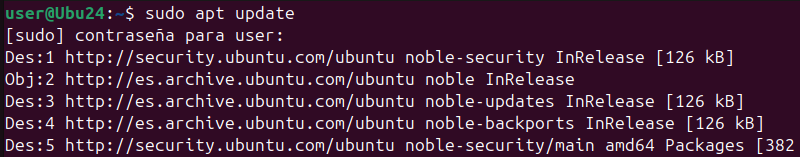
Instal·lem els paquets actualitzats, juntament amb les dependencies necessaries amb apt dist-upgrade.
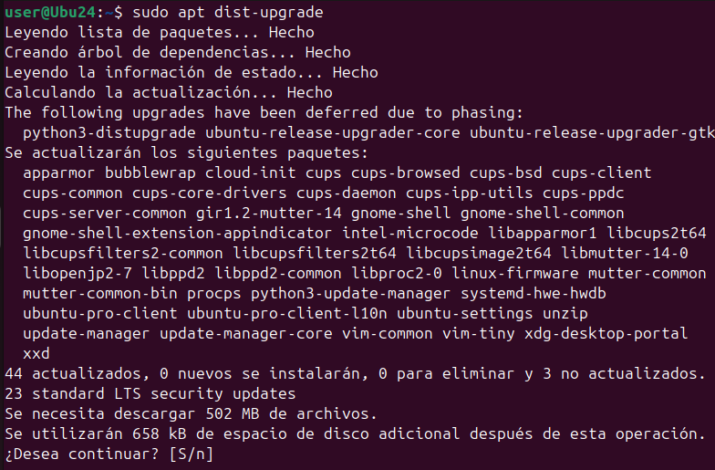
Instal·lació¶
Per instal·lar utilitzem la comanda apt install (paquet).
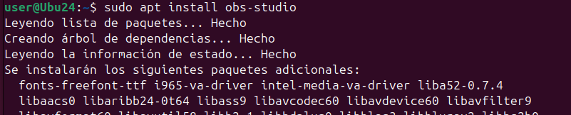
Desinstal·lació¶
Per desinstal·lar un paquet, escribim apt remove (paquet).
Encara que haguessim desinstal·lat el paquet, les dependencies i configuracions instal·lades continuraran al equip.
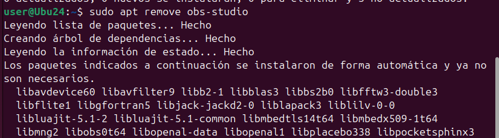
Si volem treure les configuracions, escribim apt purge (paquet).
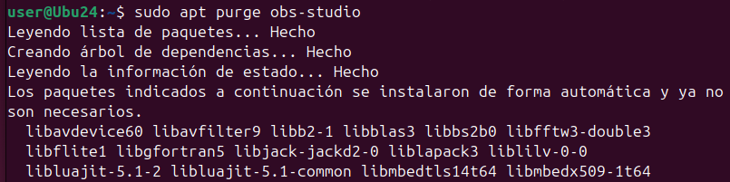
Si volem desinstal·lar les dependencies, escribim la comanda apt autoremove.
Aquesta comanda borra tots els paquets que el equip no necessita.

Versions¶
Per veure la versió d'un paquet, escribim la comanda apt-cache policy (paquet).
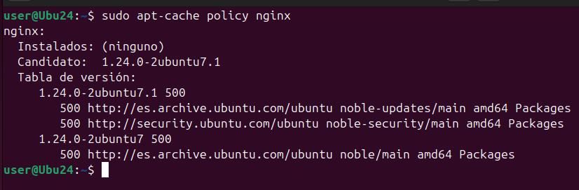
Arreglar Instal·lacions¶
Per arreglar instal·lacions, escribim la comanda apt -f install.
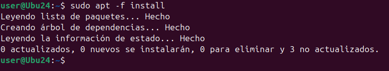
Aptitude¶
Instalacio¶
Per instalar amb aptitude utilitzem la comanda aptitude install (paquet).
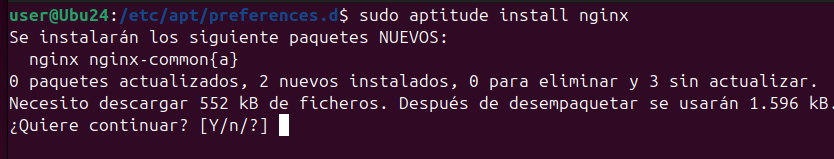
Desinstalar¶
Per desinstalar, escribim la comanda aptitude remove (paquet).
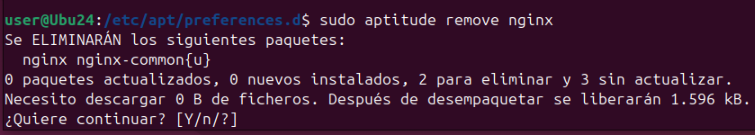
Si desinstalem un paquet amb dependencies, tambe es desinstalaran.
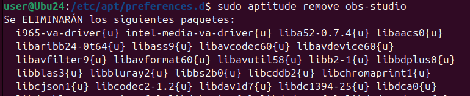
Versions¶
Per veure la versio dels paquets escribim aptitude show (paquet).
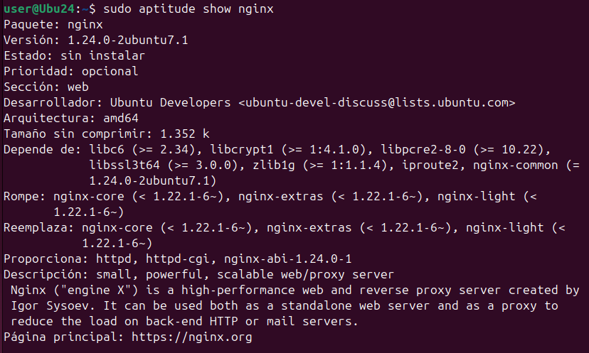
DPKG¶
En aquest gestor de paquets, es treballa directament amb arxius .deb.
Instalar¶
Per instalar paquets escribim dpkg -i (paquet).
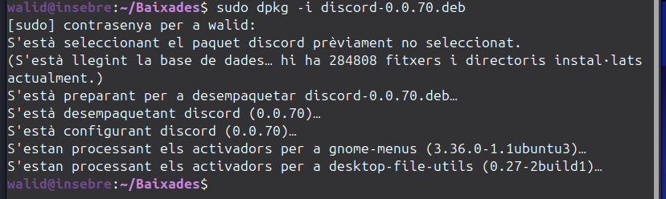
Desinstalar¶
Per desinstalar, escribim la comanda dpkg -r (paquet), igual que APT,no borrara la configuracio de l'aplicacio.
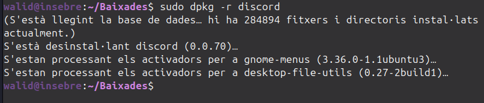
Si volem desinstalar i borrar la configuracio, escribim dpkg -P (paquet).
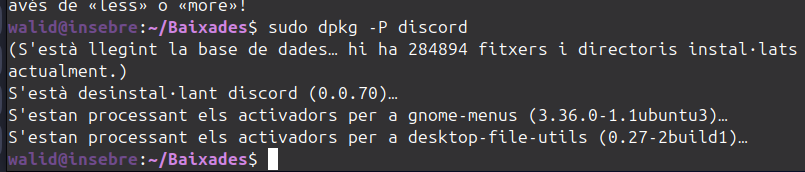
Versions¶
Per veure la versio del paquet instalat, escribim dpkg -s (paquet).
Comprovacions¶
Si volem veure si tenim un paquet instalat, escribim la comanda dpkg --select-selections | grep (paquet).
Si el paquet esta instalat, ens mostrara el nom del paquet.
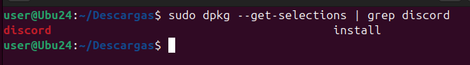
Si no esta instalat, no ens sortira res.
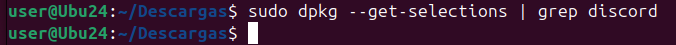
Repositoris¶
Amb APT es poden afegir repositoris que no estiguin o versions alternatives de la mateixa.
Primer afegim la linea add-apt-repository ppa:(paquet)/(versio).
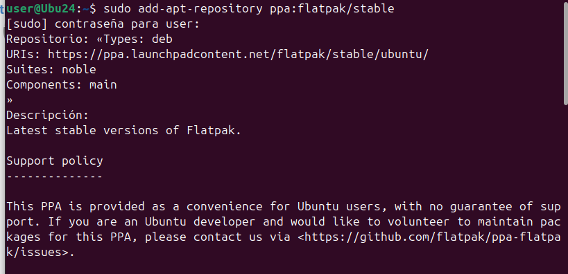
PPA es la forma en que desarrolladors individuals i equips de distribuir el seu sistema sense estar dins d'un gestor de paquets.
Amb aquesta comanda hem afegit a la llista de repositoris el paquet, per a poder instalarlo, actualitzem la llista.
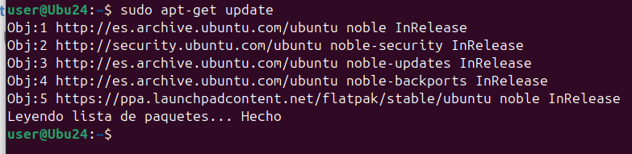
En la carpeta /etc/apt/sources.list.d podrem veure que s'ha creat l'arxiu el cual te la informacio del repostori.
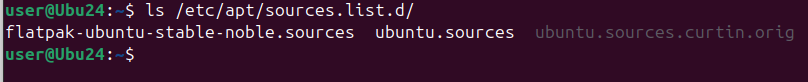
Si fem un cat per veure el arxiu, podrem veure que conte el tipus de paquet, el link on descargar-ho i la clau publica.
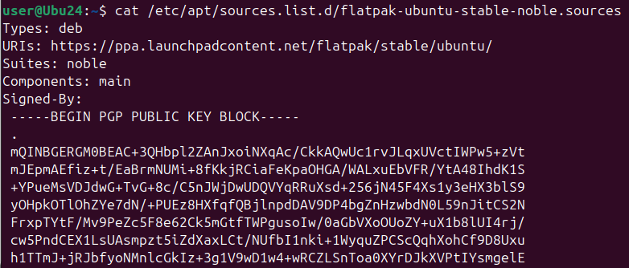
Al haber afegit l'arxiu el podrem instalar com qualsevol altre repositori de apt. 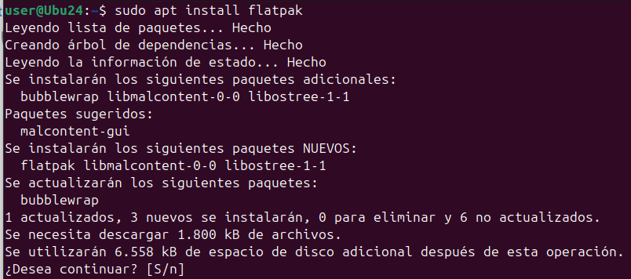